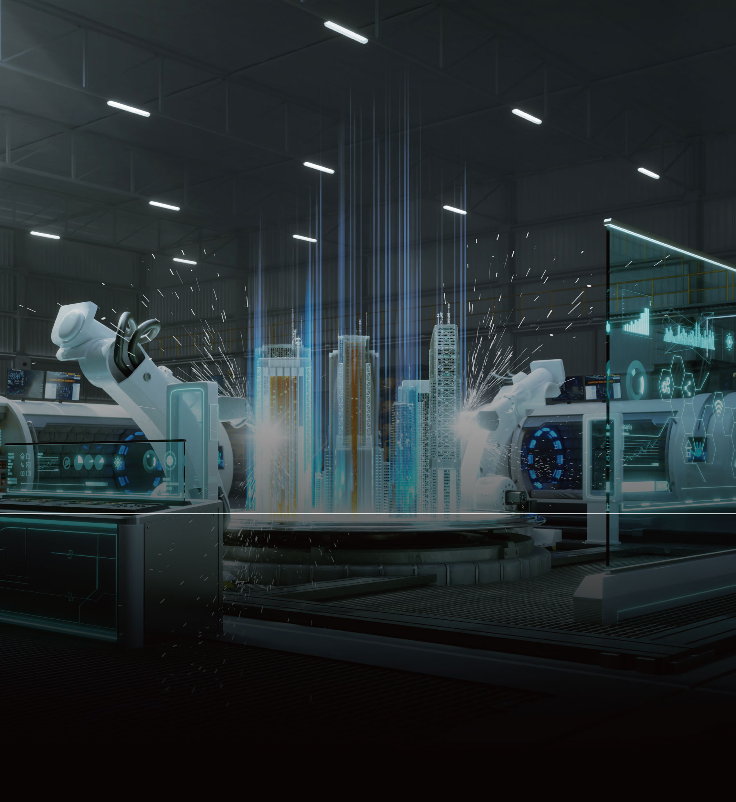

College Of Engineering • 공과대학

|
시스템 설계 분석 및 최적화, 데이터 수집 분석, 운영관리 문제 해결
|
|
산업·정보시스템공학과
DEPARTMENT OF INDUSTRIAL AND INFORMATION SYSTEMS ENGINEERING
|
|
 iise.ssu.ac.kr
iise.ssu.ac.kr
|
 02-820-0690
02-820-0690
|
|
학과 설립
1975 년
|
입학 정원
97 명
|
교직과정 개설여부
o
x
|
전임교원
12 명
|
학과 소개
산업·정보시스템공학과는 산업공학과로 출발해 산업, 연구, 교육 분야 인재를
배출해 왔다. 정보기술이 발전하고 산업 전반에 정보 시스템 적용이 활발해짐에 따라
1998년 산업·정보시스템공학과로 이름을 변경했다. 시스템적 사고방식의 함양을
목적으로 최적화 관점에서의 접근법을 습득할 수 있도록 교육하고 있다. 더불어,
문제 해결 능력, 데이터와 정보 수집, 분석 및 활용 능력, 정보 시스템 활용 능력,
의사소통 능력 등을 함양하는 교육 프로그램을 운영한다.
학과 인재상
시스템적 사고방식 및 접근법 습득을 통한 창의적인 문제해결 능력을 가진 인재
데이터 및 정보수집, 분석 acl 활용 능력을 가진 인재
시스템분석, 모델링 및 설계, 최적화 능력을 가진 인재
의사소통 능력 및 국제적 적응력을 가진 인재
국가, 교회, 지역사회에 봉사하는 리더십 있는 인재
주요 커리큘럼
선형대수, 확률통계, 경영정보시스템, 공학설계입문, 인간공학, 이산수학
OR, 프로젝트관리, 작업안전 및 사고분석, 데이터구조 및 알고리즘,
시스템시뮬레이션, 품질경영, 데이터마이닝, 프로세스경영, 최적화모형
전공종합설계 및 논문, 공장설계 및 실습, 인간컴퓨터 상호작용,
산업물류시스템, 산업정보시스템공학특론
선택교과 가이드
일반선택
수학Ⅰ, 수학Ⅱ, 미적분, 확률과 통계, 물리학Ⅰ, 화학Ⅰ, 경제, 정보
진로선택
기하, 융합과학, 경제 수학, 공학일반
동아리 및 소모임 소개
U&I(학술), 산공 PRESS(기자단), IESC(축구), OPTIMUM(농구), 신우회(신앙),
OSI(경진대회 준비)
학과 특색 프로그램
공학교육인증제(국내·외 취업 및 해외유학시 혜택)
해외 산업체 및 교육 시스템 견학 프로그램
국내 산업체 견학 프로그램
융합전공 과정(스마트소재/제품융합전공)
해외공동학위과정(미국 타우슨 대학교 보험계리·리스크 관리 연계 전공)
취득 가능 자격증
정보처리기사, 품질관리기사, 유통관리기사, 생산관리기사
졸업 후 진로
제조(자동차, 조선, 중공업, 전자, 화학 등), 유통·물류, 정보시스템·시스템통합(SI),
컨설팅, 금융, 의료, 항공, 엔터테인먼트서비스등
품질경영, 제조공학, 소프트웨어공학, 네트워크최적화, 최적화, 스케줄링, e-비즈니스,
인간컴퓨터 상호작용, 사회시스템공학, 안전공학, 인간공학, 제품/서비스개발,
지속가능디자인, 경영과학, 정보시스템, 생산시스템공학
Q 산업정보시스템공학과에 지원하는 학생에게 필요한 역량은 무엇인가요?
A
주어진 과제를 합리적이고 객관적인 판단력으로 분석하고 정리할 수 있는
능력이 있으면 좋습니다. 데이터를 분석하고 종합적으로 해석할 수 있는 통찰력을
기르기 원하는 모든 학생들을 환영합니다.